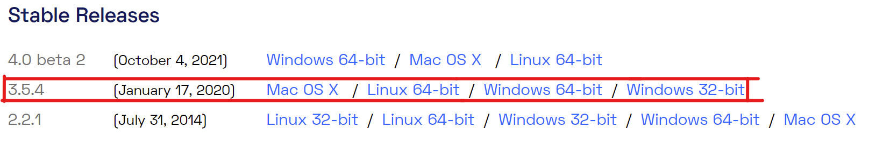
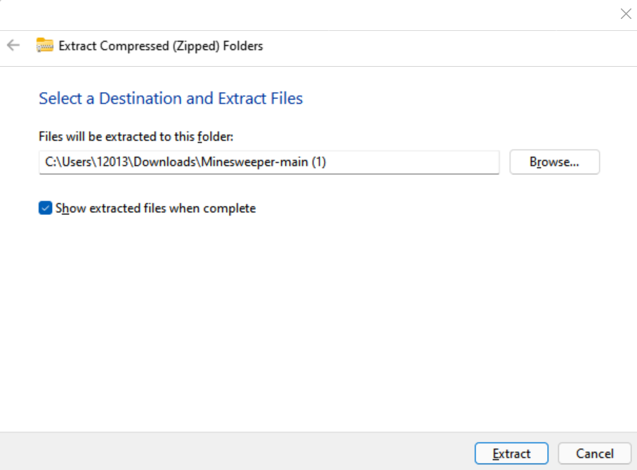
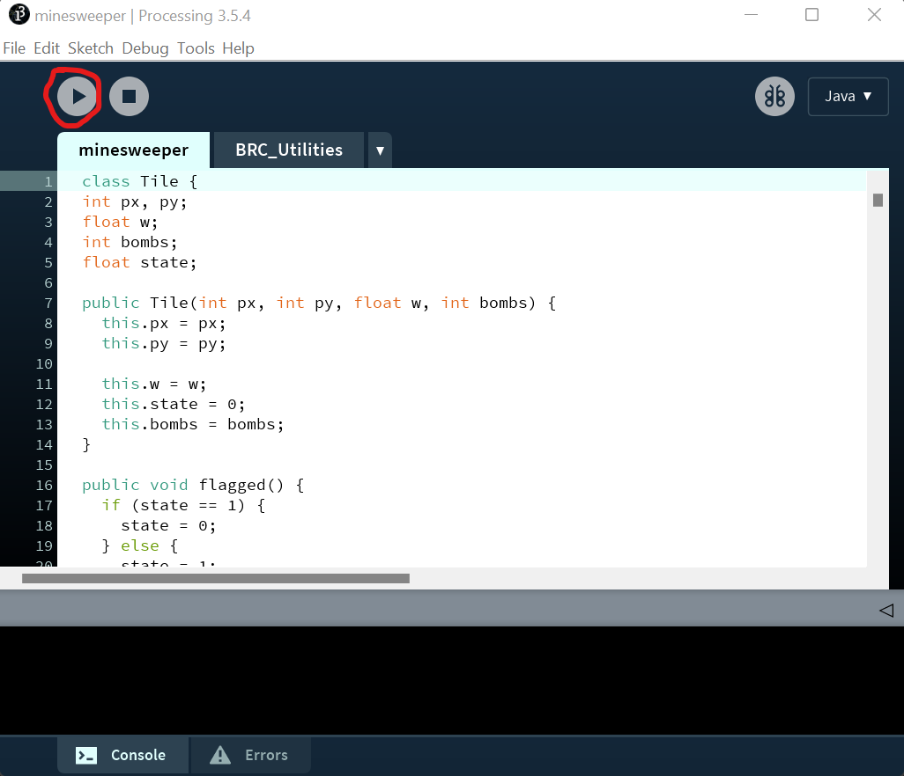

To play the game, you have to make sure you have Processing 3 installed. You can go to and select the correct file for your OS.
First, go to the processing website. Scroll down until you see Stable Releases.
Select the correct version for your OS system. Make sure you click the 3.5.4 release.
Next, download and unzip this file
On Windows 10 or 11, this will go to your downloads folder, and you can click "Extract All"
A window like this will pop up and all you have to do is simply click "Extract"
Open your newly extracted folder and go into the "minesweeper" folder. Next, search for and double click the "minesweeper.pde" file
Once loaded, you will see a window like this:
Click the run button at the very top.
And then, go to this website to access the browser based controls
If the zip file does not download, you can also find this project on github.